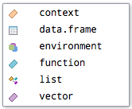

Code
library(tidyverse)In this practice document, you will learn a bit more about RMarkdown and continue to get comfortable working with these documents. There are a variety of shortcuts and tips included as well! There are a few tasks for you to put these tips and tricks into the practice either in pairs or when working on your own. The document is written with plenty of markdown (free text) guidance between the code for independent study.
Update the YAML to have the following:
Load the {tidyverse} suite of packages in a code chunk called packages with the chunk option set not to show messages.
library(tidyverse)To load in our data, we need the {tidyverse} suite of package (specifically {readr}) loaded, which we have done in the libraries code chunk at the top. With these datasets, it is quite easy to import the data as we can use the website URLs to access the most recent version of the data.
In the code chunk below load in our two data sets and call them activity_raw and hb. Use the chunk options to not show the messages from reading in the data when rendering the document and be sure to give the code chunk a meaningful label.
activity_raw <- read_csv("https://www.opendata.nhs.scot/dataset/0e17f3fc-9429-48aa-b1ba-2b7e55688253/resource/748e2065-b447-4b75-99bd-f17f26f3eaef/download/hd_activitybyhbr.csv")
hb <- read_csv("https://www.opendata.nhs.scot/dataset/9f942fdb-e59e-44f5-b534-d6e17229cc7b/resource/652ff726-e676-4a20-abda-435b98dd7bdc/download/hb14_hb19.csv")When using data that is often updated, it is crucial for reproducibility of your analyses to mention the date that you accessed the data. Below I will show you how you can use R code to include the date you last ran the code in the caption of your figure, instead of hardcoding or manually writing the date.
activity <- activity_raw |>
# join activity to hb
left_join(hb, by = join_by("Hbr" == "HB")) |>
# select the variables we are interested in
select(FinancialYear,
HBName,
AdmissionType,
AgeGroup,
Sex,
Diagnosis,
NumberOfDischarges) |>
# reformat the financial year column to be calendar year
separate(FinancialYear, into = c("Year", NA), sep = "/", convert = TRUE) |>
# filter out aggregate ALL responses from the data
# under 75 years is another aggregate level variable including all people under 75
filter(Sex != "All" & AgeGroup != "All Ages" & AgeGroup != "under75 years" &
AdmissionType != "All" & complete.cases(HBName)) |>
# format the Diagnosis variable for plotting later
mutate(Diagnosis = str_wrap(Diagnosis, width = 10))You may have noticed in working through the different practice documents last week that your R output did not appear in the console or Plots tab as it does when working in Script files.
This is because in Quarto the output of each code chunk is shown beneath that chunk of code (AKA inline)!
Run the following code to produce Figure 1, which we saw a version of in week 2’s tutorial bar chart data flow demo:
# here I am creating an object with today's date using Sys.Date() function which takes the system date when the code is run
date_today <- Sys.Date()
activity |>
group_by(Diagnosis, AgeGroup) |>
mutate(total_discharges = sum(NumberOfDischarges, na.rm = TRUE)) |>
ggplot(aes(x = Diagnosis,
y = total_discharges,
fill = AgeGroup)) +
geom_col(position = "dodge") +
scale_y_continuous(labels = scales::label_comma()) +
labs(title = "Heart Disease Discharges in Scotland by Diagnsosis and Age Group",
subtitle = "2015 - 2024",
x = "Diagnosis",
y = "Number of Discharges",
fill = "Age Group",
# add a caption with the date the data was accessed
caption = paste("Data source: Public Health Scotland, accessed",
date_today,
sep = " ")) +
theme_bw()
{ggplot2}
If you would like to see the output in the console or Plots tab, you can run the code directly in the console. If you prefer this output style, you can change the settings by going to Tools > Global Options > R Markdown > untick “Show output inline for all R Markdown documents”
You can use the console for one off checks, but should otherwise write your code in the Quarto file for reproducibility. Remember any code run in the console is not saved between R sessions.
If you have run code previously and want to run it again or edit one part of it, go to the console and you can use the up and down arrows on your keyboard to navigate through previously executed code.
Use code completion to your advantage! As you type, you may have noticed that R suggests the function, data set, or variable you may be wishing to use. For variables and functions, only those which are loaded or active in your work space will be suggested.

Make sure that you have saved the above image file in the same folder as your .qmd file, which should also be the same folder as your .RProject file. We will discuss folder structure and related topics in more detail in the coming weeks.
Type read_csv() into the console to see what I mean about the yellow sticky note box with arguments.
In RStudio and Quarto documents, we have many different ways of specifying how our code could be run. You can run the line of code by using a keyboard shortcut, the options from the run button at the top panel, or the options within a code chunk. Within each code chunk there are two ways you can run code:
You can view the keyboard shortcuts available within RStudio directly by going to Tools > Keyboard Shortcuts Help.
You can also modify keyboard shortcuts and create your own system if you have a particular way of working in other software that you want to keep consistent.
Assuming you keep with the existing keyboard short cuts, I have included a few of my most used shortcuts below:
IOS: Cmd + Enter
Windows: Ctrl + Enter
IOS: Option + Cmd + I
Windows: Ctrl + Atl + I
Why don’t you try it!
IOS: Cmd + Shift + M
Windows: Ctrl + Shift + M
Try inserting a pipe in the code chunk that you created above.
This shortcut will automatically insert the {magrittr} pipe %>%, if you want to use the native base R pipe |> you need to change settings. Go to Tools > Global Options > Code > Editing and check the box to “Use native pipe operator, |> (requires R 4.1+)”.
IOS: Cmd + Shift + A
Windows: Ctrl + Shift + A
If you are to use this shortcut, do this before adding comments to your code
Compare the code for the plot shown below, without the helpful spacing. Not only is it less beautiful to look at, but it is also overwhelming and very difficult to read and understand what is happening. Notice though, that is does execute. It is just horrible to attempt to read.
activity|>group_by(Diagnosis,AgeGroup)|>mutate(total_discharges=sum(NumberOfDischarges,na.rm=TRUE))|>ggplot(aes(x=Diagnosis,y=total_discharges,fill=AgeGroup))+geom_col(position="dodge")+scale_y_continuous(labels=scales::label_comma())+labs(title="Heart Disease Discharges in Scotland by Diagnsosis and Age Group",subtitle="2015 - 2024",x="Diagnosis",y="Number of Discharges",fill="Age Group",caption=paste("Data source: Public Health Scotland, accessed",date_today,sep = " "))+theme_bw()
You may also notice that when the spacing formatting is not used, the whole chunk of code is treated as a single line of code (line 221).
➡️ Try highlighting all of the code in messy-code and use the keyboard short cut. What do you notice? It helps, certainly, but is not as useful as intentionally formatting your code for readability as in pretty-code.
It is good practice to “let our code breathe” and have spaces around the operators (e.g., either side of the equal sign, before a pipe, etc.). In R, you can format code by hitting “Enter” after a comma, pipe, or plus sign in {ggplot2} code. For readability, it is a good idea to have each line be essentially a new element or argument within the larger function. Notice how R automatically takes care of the spacing for us (so helpful!).
activity |>
group_by(Diagnosis, AgeGroup) |>
mutate(total_discharges = sum(NumberOfDischarges, na.rm = TRUE)) |>
ggplot(aes(x = Diagnosis,
y = total_discharges,
fill = AgeGroup)) +
geom_col(position = "dodge") +
scale_y_continuous(labels = scales::label_comma()) +
labs(title = "Heart Disease Discharges in Scotland by Diagnsosis and Age Group",
subtitle = "2015 - 2024",
x = "Diagnosis",
y = "Number of Discharges",
fill = "Age Group",
caption = paste("Data source: Public Health Scotland, accessed",
date_today,
sep = " ")) +
theme_bw() 
We can see above that the code begins with the dataset activity being piped (which we can read in plain English as saying “and then do this”) into the groupby function. As this is the start of our code, everything is indented for us from there. In this way, we can quickly scan the code and see that 7 functions have been used (groupby, mutate, ggplot, geom_col, scale_y_continuous, labs and theme_minimal).
Another benefit of formatting your code like this is you can comment out specific arguments. Try to comment out the subtitle argument on line 242, rerun the code, and see what happens.
If you do not want to click on the Render button and would prefer to stick to the keyboard the following shortcut is useful
IOS: Cmd + Shift + K
Windows: Ctrl + Shift + K
That’s all for now! Happy coding :)